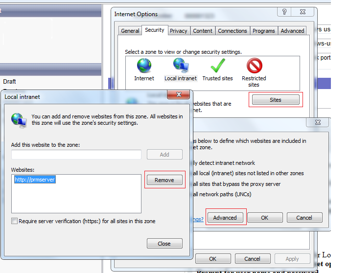
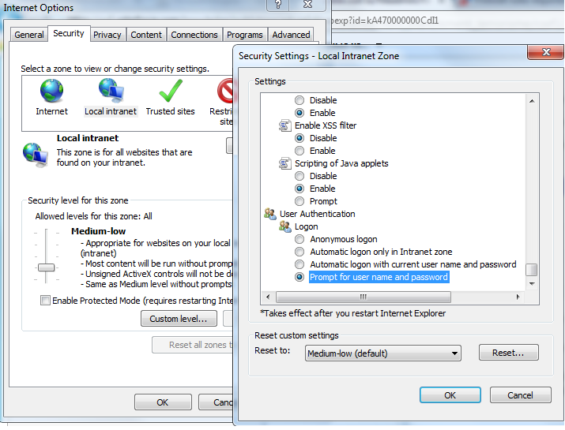

Netwrix Password Manager uses Integrated Windows authentication. By default for Local
Intranet zone there is a setting to logon automatically using current credentials. There are
two options to force prompting for credentials: 1. Move Helpdesk portal to the Internet
zone. To do it, go to Control panel - Internet options - Security tab.
Select Local Internet zone, click Sites and remove the Helpdesk portal URL.
Click Ok and then disable Automatic detection of local intrnate sites.

2. Disable automatic authentication for Local intrantet zone To do it, go to
Control panel - Internet options - Security tab. Select Local Intranet
zone, click Custom level, in subwindows scroll to the very bottom and under
User Authentication - Logon select
Prompt for user name and password.
